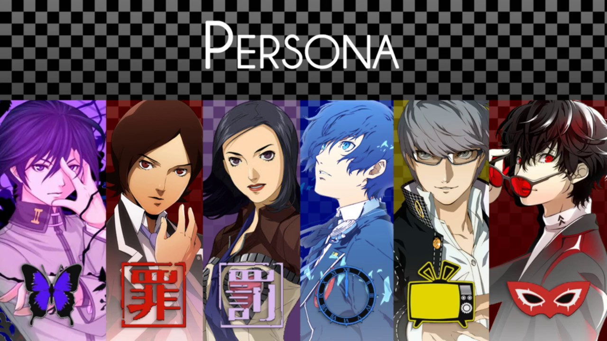
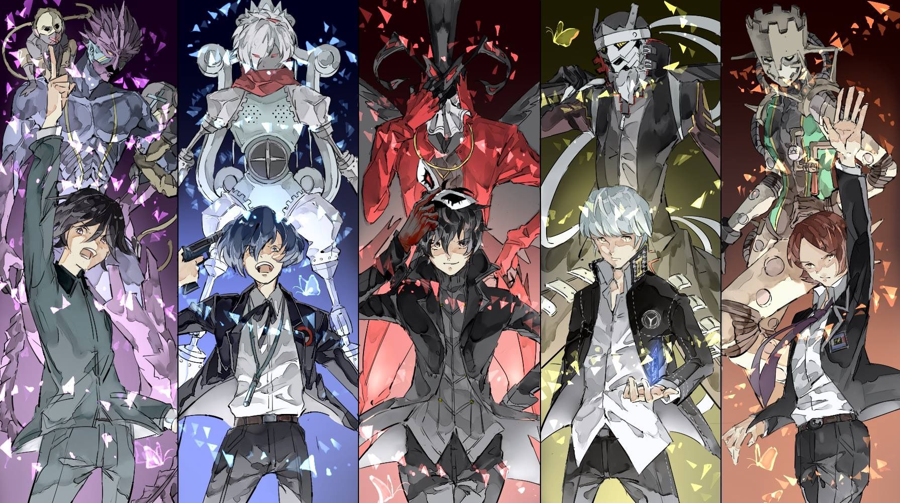
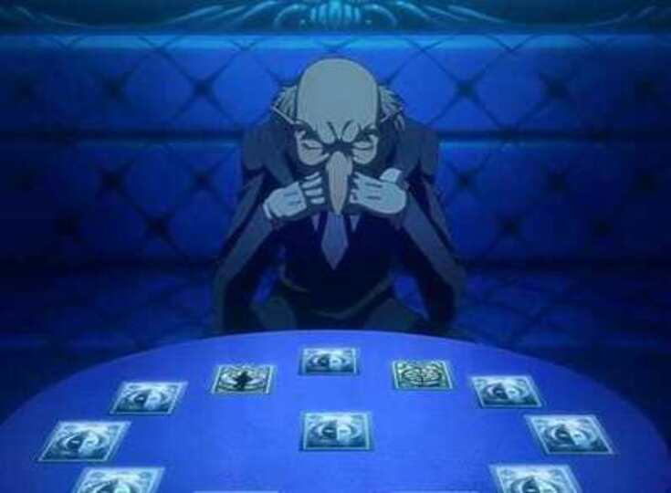

Persona is a popular game series that has yet to have a global mobile release. Persona though it had quite a few spin-offs release on the mobile platform most of them did not release outside of Japan, and some of them were shut down (Farokhmanesh). But Persona Unite will release globally and unlike its predecessor, it will not follow the events of the main title games. This means no prior knowledge about the series is required to enjoy this game as it follows its own narrative. Also, this game will be fully translated for each region, though no voice actors will be part of this project. Persona Unite will though draw inspiration from its predecessor in the form of monsters and Dungeons. This game can be played in short burst due to no missions or relationships except exploration, perfect for casual gameplay.
An element the persona series is well known for is its relationships; from social links to confidants the player usually would have made more than one friend by the end of the game (Hall). But this game will not have that element. Though there are no high school relationships being formed in this story that does not mean allies cannot be gained. Instead, like in “Persona 5” if the player should fulfil certain conditions and talk to the monster one could make an enemy an ally (Ramos). As allies are collected more ways to play are available, giving the player many options as to strategize.

Who are the Best Characters in the Persona Series? -Artist- Shigenori Soejima-Image prodived by Dameol
URL Link: https://www.youtube.com/watch?v=MsQdC7L-Kk0.
This image displays some of the characters that will be available for the players' usage.
The plot of all the persona franchise is a group of high school student facing a mythological threat while balancing everyday life of a teen (Farokhmanesh). This game will not stray too far from that as the main character of Persona Unite will be a nameless high school student. Though none of the daily school live element will be part of this game. Instead this game will be focused on the dungeon aspect. The dungeons will draw inspiration from Persona 3, Persona 4 and Persona 5; meaning fans of this franchise will see elements from Tartarus, the Midnight Channel and Mementos (Mayfair). Various items can be found in the dungeons in between the action of fighting monsters.
The creatures the player will fight along their journey were part of all the former Persona games. One does not need to have experienced those games though to enjoy this one. This mechanic is mainly to pay homage to previous artists that have worked on this series. As fans are sure to appreciate seeing familiar faces.
The combat system is standard turn-based combat in which, depending on the level of the player it will determine turn order. Enemy encounters unlike the other Persona incarnation will happen randomly. The higher the level the player is, the better chance their character has of getting a preemptive turn. This means the player will get an extra turn to perform their actions. In vise versa, if the player is ambushed the enemy will get an extra turn to perform their actions.

Persona || All Protagonists and their Initial Personas-Artist- Amanda Gibbs-Image prodived by Amanda Gibbs
URL Link: https://www.pinterest.com/pin/467741111295403582/.
This illustration depicts the protagonist from Persona 1-5 summoning their personas/monsters. Persona Unite, though lacking a lavish animation sequence for the summoning due to mobile limits, inspiration will still be drawn, as the protagonist will be capable of the same feats.
Though in previous Persona titles an individual’s party was consisted of people they would meet during certain chapters but in this game, a party can be formed with characters from across the franchise (Oloman). Though Persona characters usually summon monsters to attack for a turn, they can be made part of the party. This is one of the things that make this Persona unique. The player can hold up to five characters in their party. With over a hundred monsters and human companions to choose from, players will have many options and strategies available to them.
Fusion possibly the most important part of this game will be performed in the hub world outside of dungeons. In the past a player would have to go to the Velvet Room in order to see someone named Igor to perform the fusion (Maas). This process is lengthy and was sometime unavailable to the player. But within this game fusion is always available even when the player is in the dungeons. Another unique feature added to this game is the Velvet Icon. The Velvet Icon is a symbol that appears in the corner of the smartphone while the player is in the dungeon. When the player interacts with the icon it will transport them to the Velvet Room to perform your fusion through Igor. To perform fusion, one just needs to present him with two or more monsters to initiate the process. Players are encouraged to experiment with the monsters they have by fusing them in different combinations. Some monsters are stronger than others. When the player is done in the Velvet Room and click’s the exit icon, they will be sent back to their last known location. So, no progress will be lost in exploration.

Igor Reading the Protagonist Fate -Artist- Shigenori Soejima-Image prodived by Erroll Maas
URL Link: https://www.gameskinny.com/ho38p/investigating-igor-the-odd-history-of-personas-strangest-character
Igor, an integral part of Persona is capable of fusing your monsters to make new ones. He does This all while in the Velvet Room. This room appears different across the franchise and Persona Unite is no different. Persona Unite will have a unique spin on the Velvet Room.
Persona Unite will be released globally on December 21, 2020. It will be available for iOS and android. This game will be free with ads. Ad removal with added content will cost $10.00.
References
Dameol. “Who Are the Best Characters in the Persona Series?” YouTube, YouTube, 24 Oct. 2017, https://www.youtube.com/watch?v=MsQdC7L-Kk0.
Farokhmanesh, Megan. “The Persona Series, Explained.” Polygon, Vox Media, 14 Sept. 2016, https://www.polygon.com/2016/9/14/12901558/what-is-persona-explainer-persona-5#play
Gibbs, Amanda. “Persona || All Protagonists and Their Initial Personas: Persona Crossover, Persona 5 Joker, Persona.” Pinterest, Pinterest, 28 Sept. 2019, https://www.pinterest.com/pin/467741111295403582/.
Hall, Mat. “Persona 5 Confidant, Social Link and Romance Options, Their Locations and Gift Ideas.” Eurogamer.net, Eurogamer.net, 13 Feb. 2018, https://www.eurogamer.net/articles/2017-06-16-persona-5-confidant-social-link-romance-options-locations-gifts-4249.
Maas, Erroll. “Investigating Igor: The Odd History of Persona's Strangest Character.” Game Skinny, GameSkinny, 9 Apr. 2017, https://www.gameskinny.com/ho38p/investigating-igor-the-odd-history-of-personas-strangest-character.
Mayfair, Daniel. “My Thoughts on Persona, Games 3–5 (Final Part: 'Persona 4').” Medium, Medium, 30 Nov. 2018, https://medium.com/@danielmayfair/my-thoughts-on-persona-games-3-5-final-part-persona-4-dd21098f111c.
Oloman, Jordan. “Persona 5 Characters Guide: Social Trees, Confidants and Party Members Detailed.” Gamesradar, GamesRadar , 15 May 2019, https://www.gamesradar.com/persona-5-characters-guide/.
Ramos, Jeff. “Persona 5 Negotiation Guide: Tips and Tricks.” Polygon, Polygon, 18 Apr. 2017, https://www.polygon.com/persona-5-guide-walkthrough/2017/4/18/15342098/persona-5-negotiation-guide-tips-and-tricks.